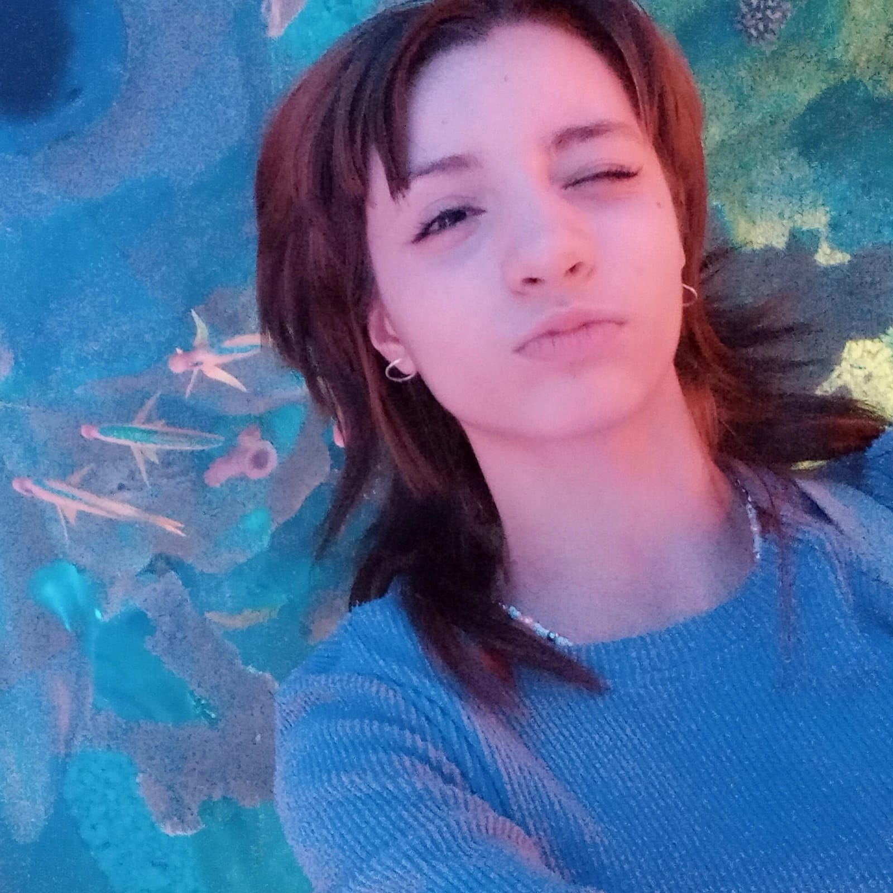
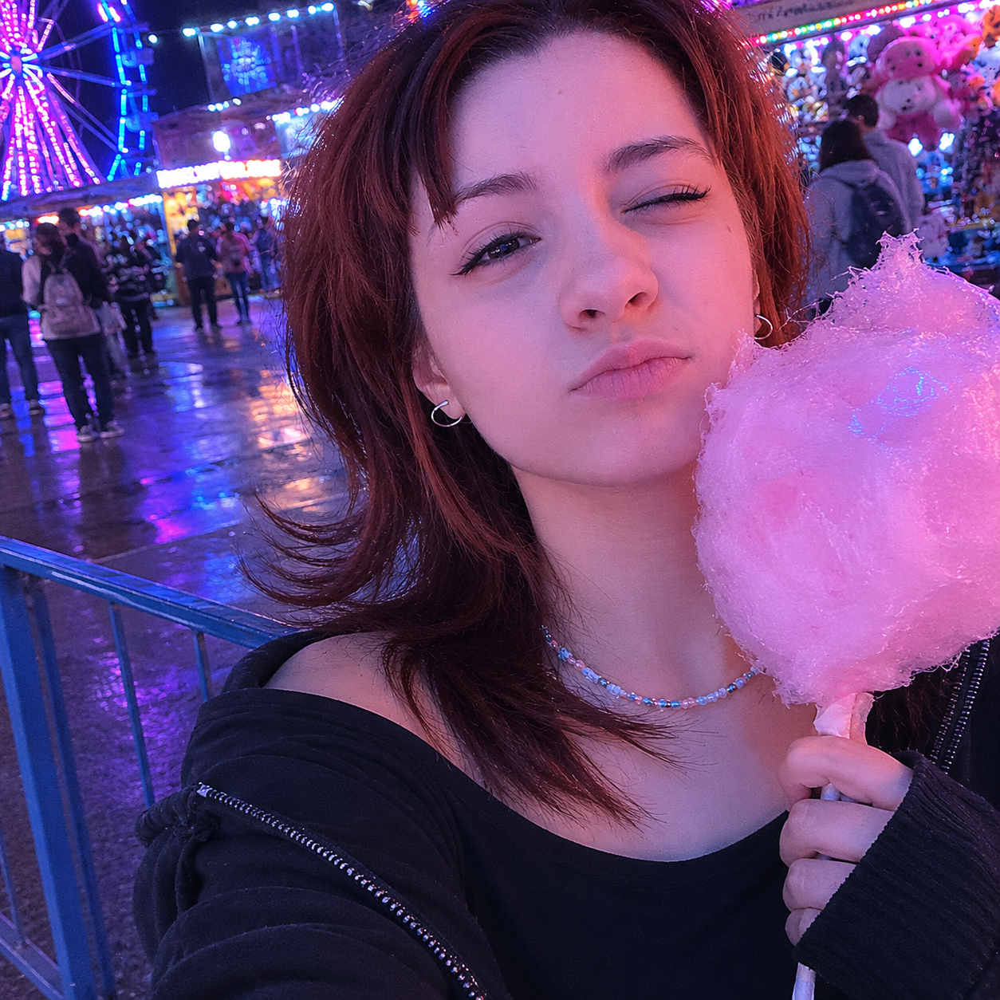
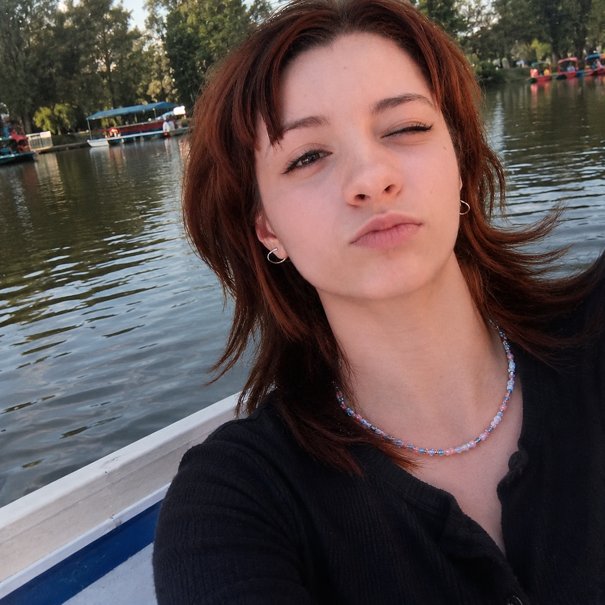
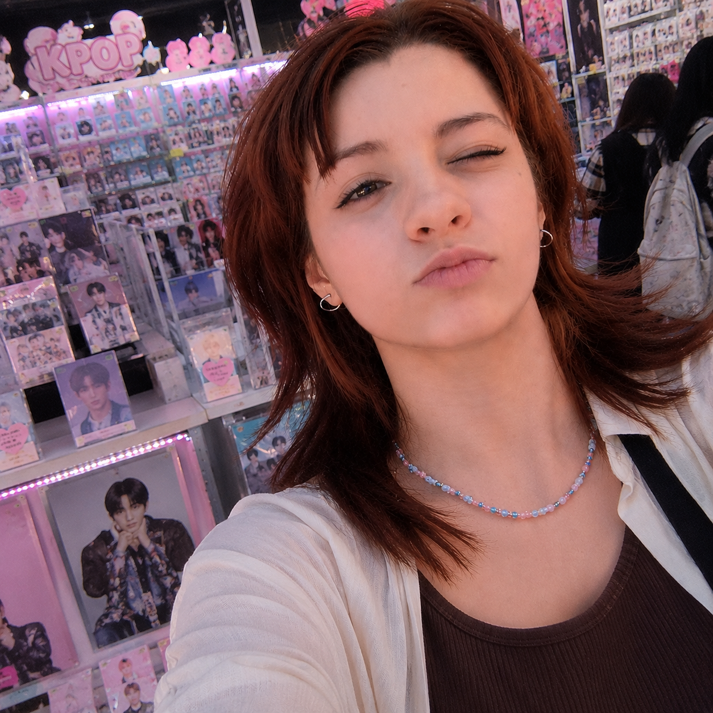

Mis vacaciones en Cdmx

Durante mis vacaciones disfrute de la ciudad y fui a varios lugares
como la feria, el museo,el lago, teliferico y muchas cosas
más.Fue una experiencia increible con mi familia.
Fui tambien a la Frikiplaza habia varias cosas
me la pase muy bien.
Mis vacaciones en la feria

Fui a una feria en cdmx y había muchísimos juegos divertidos. El ambiente estaba muy bonito y había luces por todos lados.
Me subí a una montaña rusa extrema que iba súper rápido y me dio mucha emoción hasta pense que me iba a vomitar.
También comí varias cosas y
estuve caminando viendo todas las atracciones.
Mis vacaciones en las lanchas

Fui a las lanchas con mi prima y nos la pasamos muy bien. Vimos varios patos mientras recorríamos el lago y
después estuvimos en las bicis un rato. También vimos ajolotes y se nos hicieron muy bonitos e interesantes.
Fue un día muy divertido y tranquilo.
Mis vacaciones en la Frikiplaza

Fui a la Frikiplaza y compré varias cosas de K-pop. Había muchos álbumes, posters, photocards y accesorios muy bonitos.
También escuché música y vi tiendas con mercancía de varios grupos.
Me gustó mucho el ambiente y quisiera volver otra vez.
Mis vacaciones en el museo

Fui a un museo súper grande donde vi muchos animales preciosos.
Había diferentes salas con cosas muy interesantes y también una zona de dinosaurios que me gustó muchísimo. Los esqueletos eran enormes y todo se veía muy realista.
Me divertí mucho recorriendo el museo..